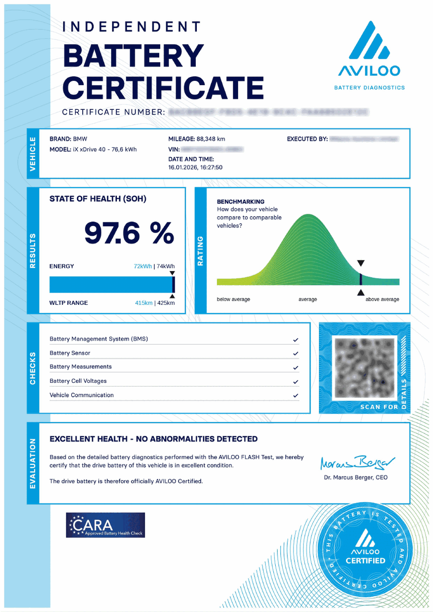
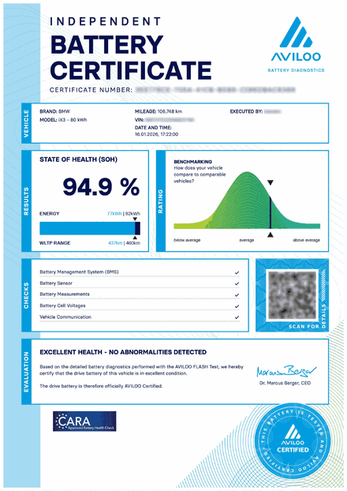
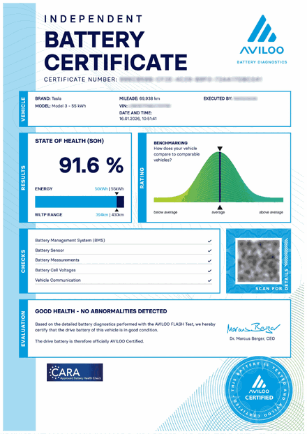
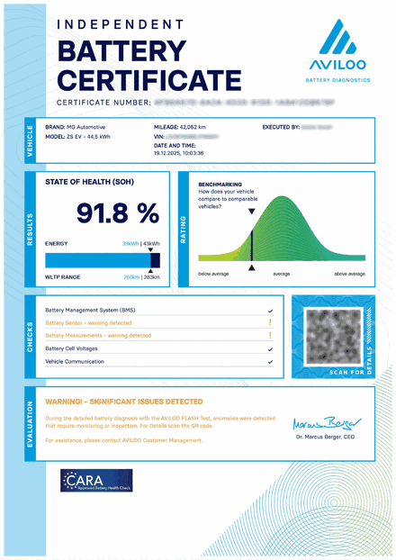
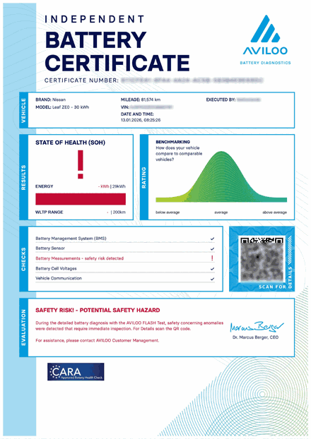
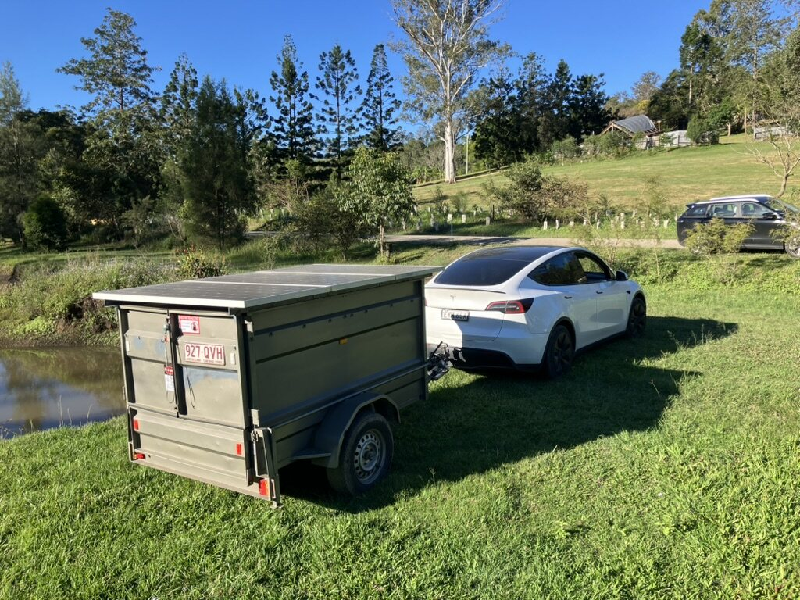

Independent AVILOO battery testing for dealers, wholesalers, insurers, auction consignors and fleets. Three minutes a car, on site across South East Queensland. Batteries that pass are AVILOO Certified.
Tell us how many vehicles and where they are.
Or bring the car to our Meadowbrook workshop.
Plugged into the OBD port, about three minutes a car. No test drive.
Emailed to you, tied to the VIN.
Cars do not need charging to a set level beforehand and they are not off your floor for long. A ten car visit is usually a couple of hours on site.
One $100 call-out fee regardless of the number of vehicles. $200 per test per vehicle.
Prices exclude GST. Account terms and volume rates available for regular trade customers.
Call or email with roughly how many vehicles and where you are. We will come back with availability.
Meadowbrook, Queensland
Off the M1, about 30 minutes from Brisbane CBD and 40 from the Gold Coast.Same price, workshop only
Bring the car to us at $200 with no call-out. Certificate before you leave.AVILOO analysed more than 500,000 test results across 20 models and found state of health varied by up to 13.5 percentage points between the best and weakest examples of the same model.
Every manufacturer calculates state of health differently. An AVILOO test certificate will allow peace of mind for buyers and sellers and ensure everyone receives the best value for money.
Test at intake, before you bid, or when valuing a trade-in.
A buyer who cannot verify the battery assumes the worst. Evidence protects value you have already paid for.
Auction businesses overseas report shorter days to sell on certified stock.
A dated report tied to the VIN records what the battery was doing when you sold the car.
At stock intake, on trade-in appraisal, or before you list. Batch testing on your lot, a certificate you can attach to listings, and monthly invoicing rather than paying job by job.
Where the repair or write-off call depends on pack condition. We test damaged, hail, flood and collision affected cars.
Certify before consignment so your listing carries evidence, or verify a car you bought unseen. Turnaround worked around your sale deadlines, with bulk rates on volume.
De-fleet and end of lease reports to support residual value at disposal. Two cars with the same odometer reading can be in very different shape. We can do a whole fleet in one visit.
The AVILOO figure is worked out independently of the car's own battery management system, so it compares across brands in a way the dashboard reading does not.

Page one of a real certificate. Vehicle and customer details redacted.The headline figure, calculated by AVILOO from the raw battery data rather than taken from the car.
Usable kWh and WLTP range as the car stands, next to the same figures when it left the factory.
Where this battery sits on the curve for that model, from below average to above average.
Battery management system, sensor, measurements, cell voltages and vehicle communication, each passed or flagged.
On page two, every cell in the pack with its voltage, so an imbalance is visible rather than inferred.
Examples of test results.




The safety risk example is a Nissan Leaf where the test found a 181mV spread between the highest and lowest cells. The dashboard was still reporting 78% state of health.

Most testing services work on clean, driveable stock, and the big auction testing programs specifically exclude damaged vehicles.
At SLCA, batteries are the business. We have been dismantling, testing and processing lithium packs since 2021.
If the car is written off, we can take the pack through to safe disposal or second life recovery, so you are not chasing a separate recycler afterwards.
We sit between Brisbane and the Gold Coast, which puts most of the South East Queensland trade within a short drive. On-site visits across:
Further out than that? Get in touch anyway. For multi-vehicle bookings we will travel.
Call or email with what you need tested and roughly how many vehicles.
Meadowbrook, Queensland
About 30 minutes from Brisbane CBD and 40 from the Gold Coast, just off the M1.Sustainable Lithium Cells Australia PTY LTD
ABN 67 661 094 159It saves a round of emails if you can tell us:
For battery collection, disposal or recycling rather than testing, the disposal form is quickest, or see our battery services.